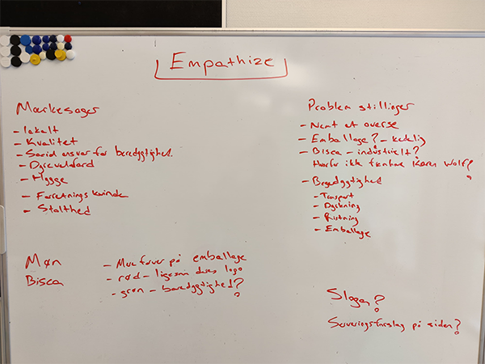
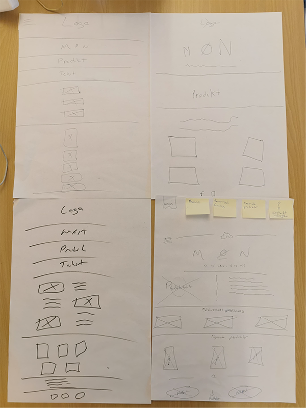
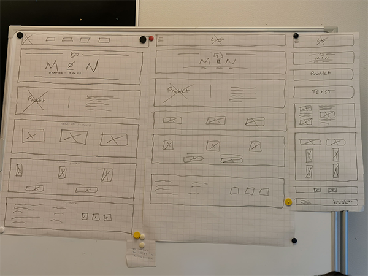
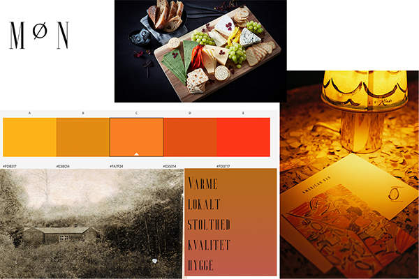
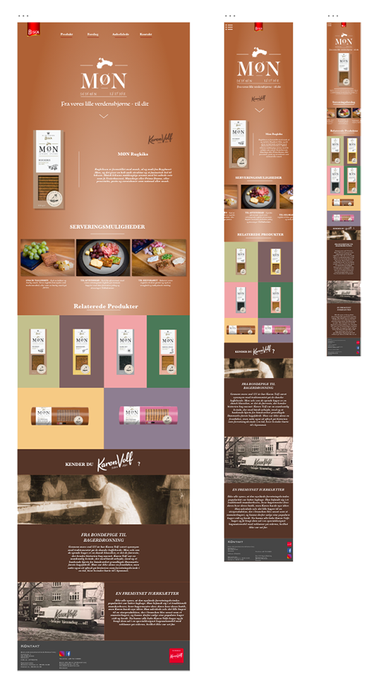

I dette projekt var formålet med at vi skulle lave en one-page hjemmeside af et produkt vi tilfældigvis blev tildelt. Jeg var i gruppe sammen med Maja og Veli - vi fik trukket Biscas MØN kiks
Vi havde besluttet at lave en hjemmeside med fokus på promovering og fortælle historien bag Karen Vulf og disse MØN Kiks.
Vi startede med at lave noget research omkring Karen Vulf og Biscas mærkesager - vi fandt hurtigt frem til at deres mærkesager var bl.a.
Lokalt,
kvalitet
Dyrevelfærd
Bæredygtighed
Ved disse mærkesager brainstorme vi om hvad vi kunne lave om ved deres hjemmeside men stadig styke deres mærkesager og deres Slogan. Vi fandt hurtigt ud af nogle problematikker ved deres hjemmeside. Det var bl.a. at deres design både var kedeligt at se på men også nemt at overse.
Efter vi havde kigget på deres mærkesager og fundet frem til problematikken og det vi kunne gøre bedre, så begyndte vi at kigge på hvordan vores hjemmeside skulle se ud ved hjælp af wireframes og prototyper.
Vi startede ud med at kunne se rundt på Biscas hjemmeside omkring denne MØN Kiks og fandt ud af der var en ret god historie forbundet med deres produkt. Historien bag dette produkt var nærmest gemt ind under en underside. Denne MØN kiks var også en releativ dyr kiks og det var et produkt med kvalitet i. Dette vil vi gerne styrke med et stilfuldt design.
Vi startede med et lave nogle wireframes med hvordan vi kunne tænke os at se vores hjemmeside kom til at se ud. Efter vi kom frem til nogle wireframes spurgte vi rundt i klassen omkring efter deres mening og vi kom frem til visse fordele og ulemper med vores wireframe - efter det tog vi alle fordelen med at lave den endelige wireframe
 Efter at komme frem til vores endelig prototype lavede vi et moodboard. Med dette moodboard talte vi om hvilke farver, skrift typer og nøgleord vi gerne ville fokuser på
Efter vi fik styr på vores moodboard, besluttede vi os af tage nogle produkt billeder til en sektion på vores hjemmeside som er vores serveringsforslag. I denne sektion ville vi komme med forskellige forslag til hvordan man kunne bruge disse kiks til bl.a. tapas og kiksebord. Under denne process fandt vi frem til 3 forskellige billeder vi kunne bruge til anrettelse.
Vi havde valgt at bruge en serif skrifttype for at gøre det let læseligt og bruge det på en minimal plan for at gøre det så overskueligt som muligt. Der hvor vi bruger teksten er til at underbygge denne historie om Karen Vulf og denne lokale og hyggelige atmosfære på hjemmesiden
På Dennne hjemmeside har vi disse gestalt love:
Nærhed/Proximity: Elementer der er placeret tæt på hinaden, vil blive opfattet som være relateret til hinanden
Lighed/similarity: Denne lov har vi brugt ved vores serveringsforslag.
Lukkethed/Common Region:Elementer der er lukket inde i sammen ramme vil blive opfattet som at være relateret til hinanden. Dette har vi brugt i vores "Relaterende produkter" sektion
Vi har brugt white space til dele vores sektioner op med.
